Database-存储和查询
数据库管理系统主要有两个部分，一个是查询，一个是存储。
- Query processor
- Parsing and translation
- Optimization
- Evaluation (Execution)
- Storage manager
- File manager
- Buffer manager
- Transaction manager
- Authorization and integrity manager
Storage
volatile storage: 比如 SDR DDR
non-volatile storage：比如我们的磁盘、SSD，还有一种带电池的main-memory
速度/大小： Cache => Main memory => Flash disk(固态硬盘)=> Magnetic disk => Optical storage(光盘) => Tape storage
前面两个是primary storage，中间两个是online storage，后面两个一般都是用来备份的，称为offline storage。
Disk
磁盘的物理结构不介绍了，看书吧。
Disk Controller ：是计算机系统和实际的磁盘驱动器硬件之间的接口。他结构高层次的读写扇区的命令，然后开始操作物理设备比如移动磁头。还有一个任务是remapping of bad sector把坏扇区在逻辑上映射到另一个物理位置。
磁盘通过一个高速互连通道连接到计算机系统。常用的接口有
- SATA(Serial ATA)。
- SCSI(Small computer system interconnect)
- SAS(Serial attached SCSI)
衡量指标：
access time = seek time + rorational latency time.
data-tansfer rate 数据传输率
一个很重要的指标是MTTF(Mean time to failure，平均故障时间)一般是3到5年。
有以下优化的方式：
- block。增大block的大小，一次多读一点
- 调度算法。
- 磁盘碎片整理。让文件最好集中在一起。
- buffer。通过增加一层non-volatile RAM或者flash memory。
- Log disk。针对数据库系统需要频繁的写日志，所以专门分配一块写日志的磁盘。平时都是sequential write。
RAID*
操作系统学过。
File Manage
fixed-length records
一个一个记录顺序排列下来。这样非常简单。
一个问题是，如果block大小和记录大小没有倍数关系的话，那么我们不能让记录横跨两个block，最后不足以容纳一个记录的时候要存到下一个Block中。
查找很方便，但是插入删除就不一定了。
删除可以把最后一条记录覆盖被删除的记录，但是你的内容如果是有序的排列的话，就不好使了。插入也是类似的对有序内容效率低下。
删除可以还使用“惰性删除”的办法，用一个free list指向被删除的记录，之后插入的时候在把它用了。
如果是有序排列的话，可以定期的重新排列一次。
Variable-Length Records
比如变长数组，变长字符串，二进制文件。
一个简单的办法是记录metadata{location, size}，用来指向真正的Records内容。
删除的话还是要移动Records，让Free Space连续。
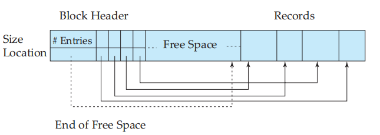
Relation
Relation是很多Record的集合。Relation怎么组织：
- Heap file (堆文件, 流水文件) – a record can be placed anywhere in the file where there is space
- Sequential file (顺序文件) – store records in sequential order, based on the value of a search key of each record
- Hashing file (散列文件) – a hash function computed on some attribute of each record; the result specifies in which block of the file the record should be placed
- Clustering file organization (聚集文件组织) – records of several different relations can be stored in the same file Motivation: store related records in different relations on the same block to minimize I/O
metadata存在哪里（比如User信息，Relation信息）。一个办法就是存在表里，和普通数据一样。
buffer
If the block is already in the buffer, the requesting program is given the address of the block in main memory If the block is not in the buffer,
- The buffer manager allocates free space in the buffer for the block, replacing (throwing out) some old pages, if no free spaces, to make space for the new block. (在buffer中为新页分配空间)
- The block that is thrown out is written back to disk only if it was modified since the most recent time that it was written to/fetched from the disk. (将被覆盖的旧块若已被修改过，则写回磁盘)
- Once space is allocated in the buffer, the buffer manager reads the block from the disk to the buffer, and passes the address of the block in main memory to requester. (从磁盘读入新块放buffer)
Buffer-Replacement Policies: LRU (最近最少使用), MRU (最近最常使用)
Index
索引能极大的加速访问。一般有两种
- Ordered indices (顺序索引): search keys (index entries) are stored in sorted order
- Hash indices (散列索引): search keys (index entries) are distributed uniformly across “buckets” using a “hash function”.
衡量索引性能的指标：
- Access Type：能够有效支持的访问类型，包括找到具有特定属性值的记录，以及找到属性值落在每个特定范围内的记录。
- Access time：使用索引找到特定数据的时间
- Insertion time：插入一个新数据的时间
- Deletion time：删除一个数据的时间
- Space overhead (空间开销)：索引结构占用的额外的存储空间
顺序索引
Primary index(clustering index)：如果关系是按照某个search key排列的（有序），那么这个search key对应的index就是primary index。search-key通常是primary key，但没必要。（注意这里的三个单词）
Secondary index(nonclustering index)： index对应的search-key和文件中记录的物理顺序没啥关系，也就是说无序。因为是无序的，所以即使对于两个相同的项目我们也需要两个指针指向他（比如80000）不像primary key记录第一个顺序往下扫描就好。故对于不是primary key的search key我们需要在中间加上一层指针。secondary index对于顺序扫描不友好，还不如直接扫描。
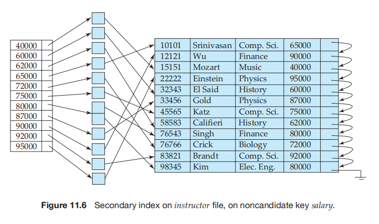
Dense index稠密索引：稠密索引中，真正数据文件的每一个search-key都会有对应的index entry。比如这个例子中的search key就不是primary key。
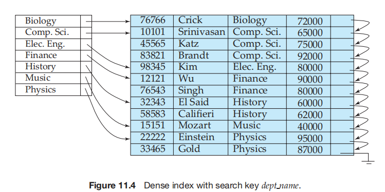
Sparse index稀疏索引：只有当关系按照search-key顺序排列才能使用（换句话说，一定是primary index）。比如下面的例子可以看出。这个稀疏的index是怎么确定的？往往是让index指向某个Block的起始位置。相比于稠密索引，稀疏索引占用的空间更小，更新的代价更小（不是每次都需要更新），不过查找的速度更慢。索引的更新很容易想清楚。
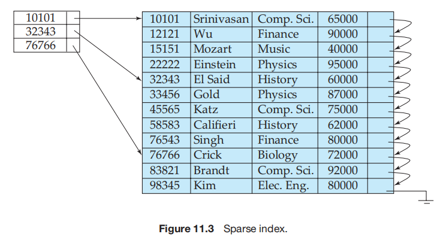
Multilevel index当你的数据库过大的时候，你的索引文件可能也会太大，这个时候你就需要“索引的索引”。有几个注意的地方，一个是外层的索引项肯定是稀疏的（不然多级有个锤子用？），所以内层索引项肯定是有序的（不然外层怎么稀疏）。
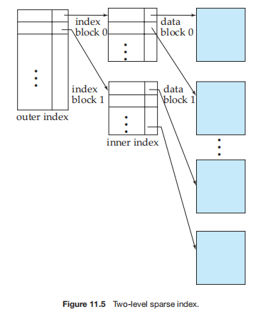
B+ Tree:star:
B+树构建一个矮树，减少Block IO。关于B+ Tree本身，在数据结构中已经学习了。
B+ Tree有点像一个多级索引。non-leaf node是稀疏索引。因为leaf node是有序的。
leaf node指向记录（如果记录重复就是一个记录的“桶”）。leaf node可以是稠密也可以是稀疏，条件和上面的索引是一样的。像下图的leaf 指向 name 是secondary index，所以必须是稠密的。
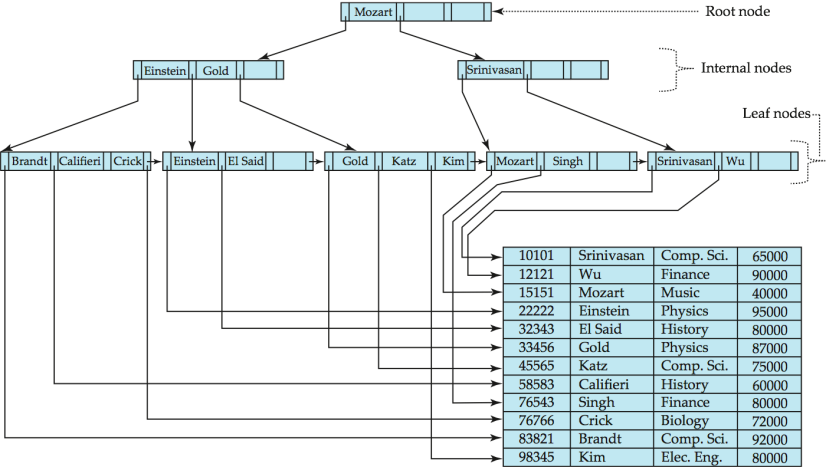
我们要知道删除/查询/插入的过程。
如果用B+ Tree组织文件的话，也可以在leaf node存放数据的内容。
查询
Start with the root node Examine the node for the smallest search-key value > k (在节点中找比k大的最小键值, 即遇到第一个比K大的键值)
If such a value exists, assume it is Vi. Then follow Pi to the child node (沿左指针指向子节点) Otherwise k Vm–1, where there are m pointers in the node. Then follow Pm to the child node. If the node reached by following the pointer above is not a leaf node, repeat the above procedure on the node, and follow the corresponding pointer. (继续往下找) Eventually reach a leaf node. If for some i, key Vi = k follow pointer Pi to the desired record or bucket. Else no record with search-key value k exists.
插入
下面的这个B+ Tree，n=4，每一层有3个值和4个指针。
这里面的插入是比较简单的。就是如果满了然后就分裂。对于叶子节点的分裂就是对半分就好了，需要注意的是非叶节点的分裂。然后还有逐级向上分裂。
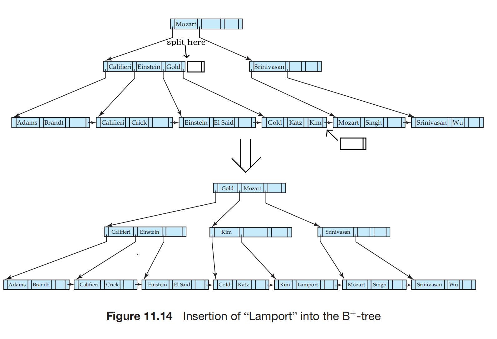
删除
如果不够半满了，就和兄弟合并/从兄弟拆分。
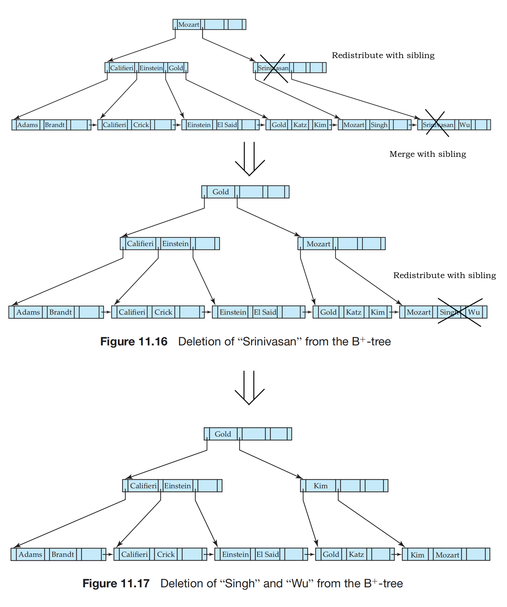
SQL 中的索引
create index
drop index
Query Processing
关系代数比SQL表达式更好的能被系统分析。执行
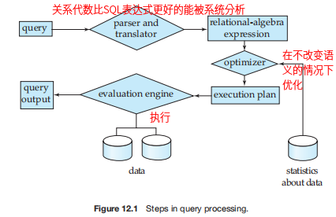
有很多因素影响time cost. time cost = disk accesses + CPU + network communication.通常，disk access是占用时间最长的。所以我们主要考虑它。 我们用传递磁盘块数和搜索磁盘次数来度量查询计算计划的代价。假设磁盘子系统传输一个块的数据平均消耗$t_r$秒，磁盘块平均访问时间为$t_s$秒，那么一次传输b个块和执行S次磁盘搜索的操作将消耗$bt_r+St_s$秒。这是忽略了很多细节的估算。一次block access指的是一次block transfer+一次block seek。
选择运算
- A1 线性搜索。系统扫描每一个block对所有的记录进行测试，是否满足选择条件。这是通用的操作。无论筛选条件是什么都好用。
- 开销$t_s+b_r*t_r$，表示一次初始搜索加上文件大小$b_r$个blcok传输。
- 如果是只查找一条记录的等值比较，那么是平均开销$t_s+b_r/2*t_r$，$b_r/2$表示期望。
- A2 B+ tree primary index & key属性等值比较。开销$(h_i+1)*(t_r+t_s)$，$h_i$表示树的高度，索引到之后在去取所以+1，因为是Key所以只有一条记录。
- A3 B+ tree primary index & 非key属性等值比较。开销$h_i*(t_r+t_s)+b*t_r$。因为是非Key所以假设有数据有$b$个块，因为是Primary index所以是连续的。
- A4 B+ tree secondary index & key属性等值比较。开销$(h_i+1)*(t_r+t_s)$。
- A4 B+ tree secondary index & 非key属性等值比较。开销$(h_i+n)*(t_r+t_s)$。因为是非Key所以假设有$n$条记录，因为不是Primary index所以不是连续的。代价可能很高。
- A5 B+ tree primary index & 比较。因为有序，所以和A3一样。这里的比较指的是简单比较，比如大于小于。
- A6 B+ tree secondary index & 比较。因为无序，所以和A4的第二种情况一样。
- A7 利用一个索引的合取选择。$\sigma _{x_1 \bigwedge x_2 \bigwedge ... \bigwedge x_3}(r)$。如果条件中有简单比较，那么可以用上面的A2-A6先筛选一遍，然后再进行筛选。
- A8 利用组合索引的合取选择。某些组合选择可以利用组合索引（多个属性上建立的索引）。转换成A2A3A4。
- A9 通过标识符的交实现合取选择。通过筛选每一个条件，分别得到一个筛选结果的集合（注意，这里集合的内容是指向真正数据的指针，没有进行真正的读取）。然后我们把得到的集合排序做交集，让同在一个Block的数据读一次即可。
实际上我们的B+树因为访问频繁，所以root往往是在Memory中的，non-leaf往往也在memory中。这里也没有考虑缓存。
排序
Order by会让我们对结果进行排序，并且通过排序我们的某些操作可以更高校的进行，比如连接。
由于数据规模可能比整个内存都大，所以我们要使用external sort，比如归并排序。下面我们假设内存能容纳M个block。
- 建立runs，就是每一个排好序的段，每个段M个大小。比如这个时候有N个runs。
- 接下来选取M-1个runs，进行merge。每一次按序选出第一个元组写入磁盘然后从内存中移除，然后再从磁盘中读入。这里之所以是M-1是为了留下一个存放结果的块。通过这一次merge，我们还有N/(M-1)个runs。重复第二步直到只有1个runs。
代价分析，假设一共有$b_r$个Block：
- 第一步，进行$2*b_r$传输，一半读一半写。
- 第二步，考虑归并次数为$log_{M-1}(b_r/M)$，一样的也要进行$2$次，除了最后一次不写回。一共$b_r*(2log_{M-1}(b_r/M)-1)$传输。再考虑磁盘搜索，$2(b_r /M)+(b_r /b_b)(2(log_{M−1}(b_r /M)) − 1)$。
Join
下面我们假设要做的运算是$r \Join_{check} s$。r和s在磁盘中都是连续的。关于他们代价的估计，其实非常的复杂，关键是要理解模型。
Nested-Loop Join
这是最naive的做法
for tuple_r in block_r:
for tuple_s in block_s:
if (Check(tuple_r,tuple_s)):
add (tuple_r,tuple_s) to result
Block Nested-Loop Join :star:
在内存不够大的情况下，为了减小IO开销，以block为单位进行处理。
# Relation r is called the outer relation
# Relation s is called the inner relation
for block_r in r:
for block_s in s:
for tuple_r in block_r:
for tuple_s in block_s:
if (Check(tuple_r,tuple_s)):
add (tuple_r,tuple_s) to result
最坏情况，也就是内存只能容纳三个Block（两个输入一个输出）要进行$transfer = block_r*block_s+block_r$，我们也可以看出要让r越小越好。对outer relation的每一块进行一次磁盘搜索，inner relation每一次循环进行一次磁盘搜索，$seek=2b_r$。
如果是对key进行join，那么我们找到一个便可以停止循环。 如果是LRU，可以从头扫到尾，再从尾扫到头，对buffer友好。
Indexed Nested-Loop Join
只支持equal-join or natural join, 并且index in inner join atrribute。
In a nested-loop join , if an index is available on the inner loop’s join attribute, index lookups can replace file scans. For each tuple tr in the outer relation r, the index is used to look up tuples in sthat will satisfy the join condition with tuple tr。我们一般认为B+ Tree是半满的。
for tuple_r in r:
tuple_s = FindByIndex(tuple_r)
add (tuple_r,tuple_s) to result
如何估计代价呢？如果每次FindByIndex都需要从磁盘中读取B+ Tree Node的话，代价是BTreeHeight+1(假设叶子节点的指针直接指向磁盘中的内容)。读tuple_r的话，肯定不能一次读一个，要尽可能的多读，怎么说也要一次读一个Block。
最坏情况假设Memory还是只能容纳三个Block（两个输入一个输出），那外层循环读r需要$b_r$，内层索引查找需要$n_r\times(height+1)$。对seek和transfer都是这样。所以有时候会统称为$access = b_r+n_r\times(height+1)$
Merge Join
每个Block只用读一次，但是要求他们是按照equal-join的条件排好序的。过程和归并排序中的merge类似。这个的代价不怎么好估计，但是不高。最多是$b_r+b_s$次access。
如果无序的话就要先排序。
Hash Join
同样也是只能用在equal-join 或natural-join上。
基本思想是，把join Attribute建立hash。那么若tuple_r散列到了i，对应的tuple_s也必然散列到了i。所以只用在相同的散列块中寻找就可以了。
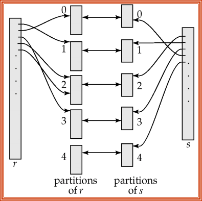
/* Partition s */
for each tuple ts in s do
begin
i := hash(ts[JoinAttrs]);
Hs[i] := Hs[i] ∪ {ts};
end
/* Partition r */
for each tuple tr in r do
begin
i := hash(tr[JoinAttrs]);
Hr[i] := Hr[i] ∪ {tr};
end
/* Perform join on each partition */
for i := 0 to nh do
begin
read Hs[i] and build an in-memory hash index on it;
for each tuple tr in Hr[i] do
for each tuple ts in Hsi do
if (ts[JoinAttrs] = tr[JoinAttrs])
add tr ✶ ts to the result;
end
Expressions
Materialized：每一步计算的结果被materialize，然后用于下一步的运算。这种办法总是可用的。比如下面这个例子，选择完了产生一个中间relation，然后在和Instructor连接产生结果。
Pipeline：每一次操作的结果直接传递到下一步操作。这种办法效率更高，但是不一定可用。比如下面这个例子，department和Instructor做连接并判断是不是Watson。
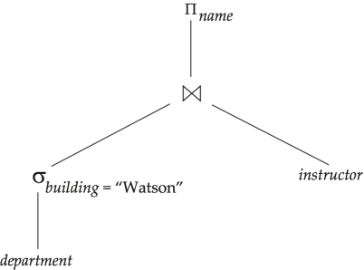
Query Optimal
- 两个关系代数表达式是等价的，但是执行效率可能是不同的
- 对于同一个表达式，我们有不同的执行方式
等价表达式
有过滤能力的往前推，尽早进行投影。让连接结果较小的连接先进行。
-
Conjunctive selection operations can be deconstructed into a sequence of individual selections. This transformation is referred to as a cascade of $\sigma$. 这样就只用一次了
$\sigma_{\theta_1}(\sigma_{\theta_2 }(E)) = \sigma_{\theta_1 \wedge \theta_2 }(E)$
-
Selection operations are commutative(可交换的).
$\sigma_{\theta_1}(\sigma_{\theta_2 }(E)) = \sigma_{\theta_2}(\sigma_{\theta_1 }(E))$
-
Only the final operations in a sequence of projection operations are needed; the others can be omitted. This transformation can also be referred to as a cascade of $\prod $
$\prod_{L1} (\prod_{L2} (... (\prod_{Ln} (E))...)) = \prod_{L1}(E)$
-
Selections can be combined with Cartesian products and theta joins.
$\sigma_{\theta_1} (E1 \Join_{\theta_2} E2) = E1 \Join_{\sigma_1∧\sigma_2} E2$
-
Theta-join operations are commutative. 上面提到的不同Join算法对Join的顺序有不同要求
$a \Join b=b\Join a$
-
Natural-join operations are associative. 我们应该让预期结果更小的Join先执行
$a \Join (b \Join c)=(a \Join b) \Join c$
-
The selection operation distributes over the theta-join operation under the following two conditions
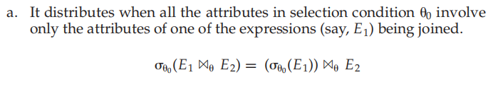
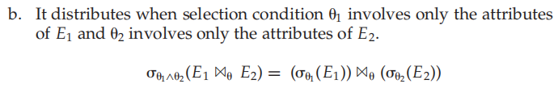
-
The projection operation distributes over the theta-join operation under the following conditions
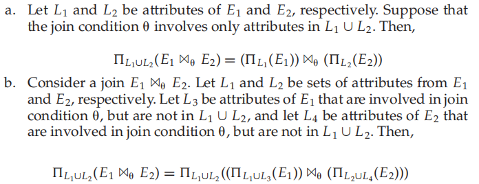
-
The set operations union and intersection are commutative.
$a\cup b = b\cup a$
-
Set union and intersection are associative.
$(a\cup b)\cup c = a\cup (b \cup c)$
-
The selection operation distributes(分配率) over the union, intersection, and set difference operations.我们应该把这些筛选的条件先执行。
$\sigma_P(E_1-E_2)=\sigma_P(E_1)-\sigma(E_2)$
-
The projection operation distributes over the union operation.我们应该把这些筛选的条件先执行。
$\prod_{L}(E_1\cup E_2) = \prod_{L}(E_1) \cup \prod_L(E_2)$
基于统计信息的代价估计
- $n_r$, the number of tuples in the relation r.
- $b_r$, the number of blocks containing tuples of relation r.
- $l_r$, the size of a tuple of relation r in bytes.
- $f_r$, the blocking factor of relation r — that is, the number of tuples of relation r that fit into one block.
- $V(A,r)$, the number of distinct values that appear in the relation r for attribute A. This value is the same as the size of A(r). If A is a key for relationr, $V(A,r)$ is $n_r$.
- 每个属性不同值（范围）的直方图
统计值不一定要非常正确，因为维护统计值也需要开销。
然后我们对不同的运算估计结果的大小。
- 单条件等值合取。如果有直方图就用比例×$n_r$，如果没有就用$n_r/V(A,r)$。如果是多条件合取/析取我们可以认为条件之间是相互独立的，然后用概率论的知识估计。如果是范围选择运算，我们可能会假设结果在最大值和最小值之间均匀分布；如果连最大值和最小值都没有，就是n/2。
- natural Join。如果两个表没有同名字段，我们认为natural join就是笛卡尔积；如果对应的两个表有主键和对应的外键，比如学生（有专业字段）表和专业表，那么join的结果就是学生条数；如果是两个随便的字段，那么我们认为是$min(\frac {n_rn_s} {V(A,r)}, \frac {n_rn_s} {V(A,s)})$，注意这个推导的前提依然是属性均匀分布。
- 投影。$V(A,r)$，V就是这个概念。
- 聚集。也是$V(A,r)$，A是指group by的那个属性。
- 集合运算。R并S 当作 $n_r+n_s$，R交S 当作 $min(n_r,n_s)$，R-S 当作 $n_r$。这些都是上界。